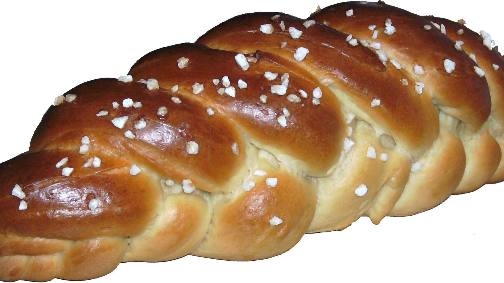

Zurück zur Übersicht
Friedas genialer Hefezopf
Großer, weicher Hefezopf mit Zitronenabrieb, ohne Vorteig. Statt geflochten wird er zweimal spiralförmig gedreht und sieht trotzdem aus wie geflochten. Eine Portion entspricht einem Zopf aus 1 kg Mehl, für einen kleineren Zopf die Menge halbieren.
- Zeit
- 3 Std. 15 Min.
- Schwierigkeit
- mittel
- Kategorie
- Süßgebäck
- Ernährung
- vegetarisch
Zutaten
Portionen
- 1 kgWeizenmehl Type 405
- 500 mlMilch, lauwarm
- 100 gZucker
- 42 gfrische Hefe (1 Würfel)
- 150 gButter, weich
- 2 TLSalz
- 2Eier (Größe M)
- 1 ELZitronenabrieb oder 5 Tropfen Bittermandelaroma
- 1Ei zum Bestreichen
- 2 ELHagelzucker
- evtl. Fett fürs Blech
Zubereitung
- Das Mehl in eine große Schüssel sieben. Die Milch leicht erwärmen und in einen Rührbecher gießen. Zucker und zerbröckelte Hefe dazugeben und verrühren, bis sich die Hefe weitgehend aufgelöst hat. Zitronenabrieb oder Bittermandelaroma und die Eier dazugeben und alles gut verquirlen, am besten kurz mit dem Stabmixer, sonst mit dem Handmixer.
- Die Flüssigkeit in einem Schwung zum Mehl gießen, weiche Butter und Salz dazugeben und sofort alles kräftig verkneten, bis der Teig elastisch und glatt ist. Von Hand dauert das etwa 10 Minuten, mit der Küchenmaschine entsprechend weniger. Wer möchte, knetet Rosinen mit ein. Mit einem feuchten Küchentuch abdecken und auf das Doppelte aufgehen lassen, das kann 2 Stunden dauern.
- Eine Backunterlage mit Mehl bestreuen, den Teig daraufgeben und von Hand noch einmal durchkneten.
- Formen: Man kann den Zopf aus drei Strängen flechten oder so: Den Teig halbieren und zu möglichst langen, an den Enden zugespitzten Rollen formen. Beide Rollen ziemlich straff spiralförmig umeinanderschlingen, am besten in der Mitte beginnen und zu den Enden hinarbeiten. Diesen Strang an beiden Enden halten und so gedreht, wie er ist, noch einmal fest spiralförmig umeinanderschlingen. Der Zopf ist jetzt deutlich kürzer und an einem Ende schmaler, das ist richtig so.
- Den Zopf diagonal auf ein gefettetes oder mit Backpapier belegtes Blech legen. Das Ei mit einer Prise Zucker und Salz sehr gut verquirlen, am besten mit dem Mixer, damit der Zopf beim Backen nicht schwarz wird. Den Zopf damit bestreichen und nach Wunsch dick mit Hagelzucker bestreuen. Noch einmal 30 Minuten gehen lassen.
- Inzwischen den Backofen auf 160 °C Umluft vorheizen, oder auf 180 °C Ober-/Unterhitze, weil der Zopf bei Umluft schneller trocken werden kann.
- Auf der mittleren Schiene 30–35 Minuten backen, bis er karamellfarben ist. Er ist durch, wenn es beim Klopfen mit dem gekrümmten Finger auf die Unterseite hohl klingt.
Tipp: Zum Kneten kein Mehl zugeben. Der Teig verliert die Klebrigkeit durch richtiges Kneten und wird erst seidenglatt, wenn er gut aufgegangen ist. Die Küchenmaschine braucht etwa 15 Minuten, erst langsam, dann schneller. Mit der Fensterprobe sieht man, ob er die richtige Konsistenz hat.
Brotbackautomat: Im Programm „Teig kneten“ geht es auch, dauert etwa 1 Stunde 20 Minuten und verkürzt die Gehzeit, aber nur mit der halben Menge.